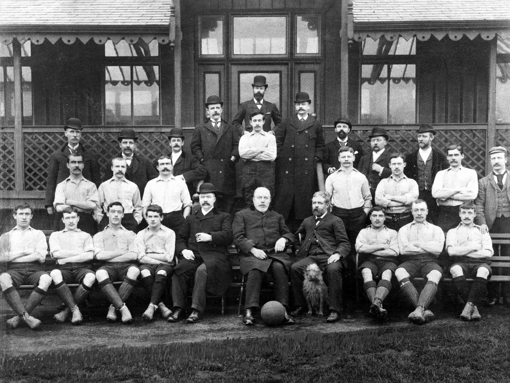

Liverpool Football Club was founded in 1892, following a dispute between the Everton Football Club committee and John Houlding, the owner of the land at Anfield where Everton played. Houlding formed a new club and named it Liverpool, after the city in which it was based. Liverpool's first season was played in the Lancashire League, and they were promoted to the Second Division of the Football League in 1893.
Liverpool Football Club's first ever match took place on September 1, 1892, against Rotherham Town at Anfield Stadium in Liverpool, England. The game was a friendly match, and Liverpool won 7-1. The team was made up of a mix of local talent and players from Scotland.
Malcolm McVean(bottom row, from the right), who had been signed from Scottish club Renton, scored Liverpool's first-ever goal just a few minutes into the match.
Liverpool's captain, John Houlding, was the club's founder and owner of Anfield Stadium. The team's success on the pitch in their early years led to their admission to the Football League in 1893. Below we have a video summary of the famous first match
Anfield is Liverpool Football Club's home stadium, located in the Anfield district of Liverpool. It has a seating capacity of 53,394, making it the seventh largest football stadium in England. Anfield has been Liverpool's home since the club's formation, and has hosted numerous historic matches over the years, including European Cup finals and Liverpool's 1989 league title win.
In the UEFA Champions League final on May 25th, 2005. Liverpool faced a star-studded AC Milan side featuring some of the world's best players including Paolo Maldini, Andrea Pirlo, and Andriy Shevchenko.
Liverpool had a tough road to the final, having to overcome Olympiacos, Bayer Leverkusen and Chelsea in the knockout stages.
In the first half of the match, Liverpool found themselves 3-0 down to AC Milan. However, Liverpool managed to score three goals in six minutes during the second half to level the match at 3-3 after extra time. The goals were scored by Steven Gerrard, Vladimir Smicer and Xabi Alonso.
The match went into penalties where Liverpool won 3-2 with Jerzy Dudek making two crucial saves. It was one of the greatest comebacks in football history and cemented Liverpool's place as one of Europe's elite clubs.
In the first leg of the Champions League semi-final fixture between Liverpool and Barcelona on May 1st, 2019, Barcelona won 3-0 at Camp Nou. Liverpool had a tough task ahead of them in the second leg at Anfield.
In the second leg of the fixture, Liverpool managed to complete one of the greatest comebacks in Champions League history by winning 4-0 against Barcelona. Divock Origi scored two goals while Georginio Wijnaldum scored two goals as well. Liverpool’s victory was even more impressive considering that they were without their star players Mohamed Salah and Roberto Firmino due to injury.
The victory saw Liverpool progress to the final of the Champions League where they went on to beat Tottenham Hotspur 2-0 to win their sixth Champions League title.
Liverpool's Premier League winning season of 2019-20 was a historic campaign for the club. The team, managed by Jurgen Klopp, dominated the league and clinched their first top-flight title in 30 years.
Liverpool started the season with a run of victories, establishing an early lead at the top of the table. Key players such as Mohamed Salah, Sadio Mane, and Virgil van Dijk were in excellent form, and the team's high-intensity playing style proved too much for many of their opponents.
Despite a mid-season dip in form, Liverpool bounced back to secure the title with seven games remaining. The team finished the season with a club-record 99 points, 18 points ahead of second-placed Manchester City.
The title win was the culmination of several years of hard work and investment by Liverpool, both on and off the pitch. The club's owners, Fenway Sports Group, had backed Klopp in the transfer market, allowing him to build a squad capable of competing at the highest level. The team's success was also built on a strong team ethic, with players and staff working together towards a common goal.
Now that you have read our whole site, you are a certified liverpool genius!, take our quiz to prove yourself!
Click here!